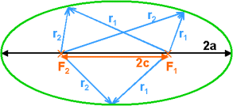
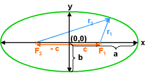
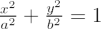
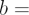
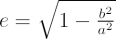
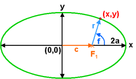
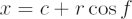
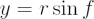
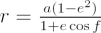

The ellipse is one of the four classic conic sections created by slicing a cone with a plane. The others are the parabola, the circle, and the hyperbola. The ellipse is vitally important in astronomy as celestial objects in periodic orbits around other celestial objects all trace out ellipses.
An ellipse is defined as the locus of all points in the plane for which the sum of the distances r1 and r2 to two fixed points F1 and F2 (called the foci) separated by a distance 2c, is a given constant 2a.
Therefore, from this definition the equation of the ellipse is: r1 + r2 = 2a, where a = semi-major axis.

The most common form of the equation of an ellipse is written using Cartesian coordinates with the origin at the point on the x-axis between the two foci shown in the diagram on the left.
If we define the semi-minor axis, b2 = a2 – c2, then the ellipse equation can be rewritten as:
 |
where | semi-major axis |
|  semi-minor axis |
The shape of the ellipse is described by its eccentricity. The larger the semi-major axis relative to the semi-minor axis, the more eccentric the ellipse is said to be. The eccentricity is defined as:

Another useful relation can be obtained substituting for b in the equation above:
This gives an interpretation of the eccentricity as the position of the foci as a fraction of the semi-major axis.

The position of a point on an ellipse can be specified by using polar coordinates, radial distance r and angle f, with the origin on one of the foci. This allows us to express (x,y) coordinates using:
 |
 |
The equation of the ellipse can also be written in terms of the polar coordinates (r, f). Substituting for x and y in the ellipse equation we get:

The circle is a special case of an ellipse with c = 0, i.e. the two foci coincide and become the circle’s centre. If we substitute for zero eccentricity in the equations above, we obtain a = b, so both axes are equal to each other, and to the circle’s radius.